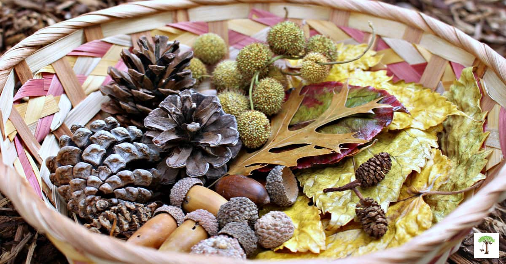
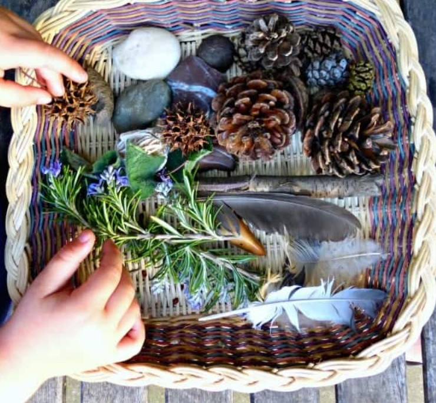
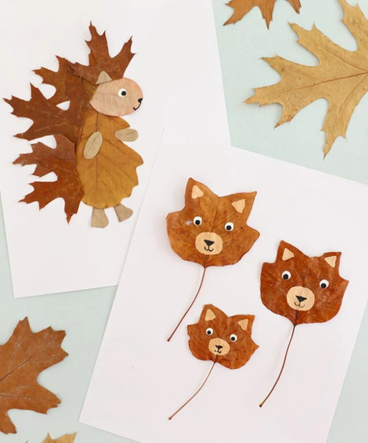

EHPAD & structures médico-sociales
Les ateliers proposés s’adressent aux personnes âgées ou en situation de fragilité, dans une approche douce, sensorielle et adaptée aux capacités de chacun.
L’objectif est de favoriser le bien-être, stimuler les sens et encourager les échanges, dans un cadre bienveillant et valorisant.

Exploration sensorielle de la nature
Contenu :
Atelier fondé sur la découverte d’éléments naturels à travers les sens :
toucher, odorat, écoute, observation et manipulation de matières naturelles variées.
Objectifs :
- Stimuler les sens et la mémoire
- Apporter détente et apaisement
- Favoriser les échanges et la verbalisation
Public visé :
EHPAD, structures médico-sociales
Nombre maximum de participants :
6 personnes
Durée :
1h30 à 2h d’animation

Boîte à reconnaissance naturelle
Contenu :
Jeu sensoriel autour d’objets naturels à reconnaître au toucher ou à l’odorat,
avec temps d’échange autour des souvenirs, sensations et ressentis.
Objectifs :
- Stimuler la mémoire sensorielle
- Encourager la participation
- Favoriser le lien social
Public visé :
EHPAD, structures médico-sociales
Nombre maximum de participants :
6 personnes
Durée :
1h30 à 2h d’animation

Création végétale apaisante
Contenu :
Réalisation de compositions simples à partir d’éléments naturels
comme les feuilles, fleurs, mousses ou petits végétaux, sous forme de collage ou composition libre.
Objectifs :
- Apaiser et recentrer
- Stimuler la créativité
- Valoriser les participants
Public visé :
EHPAD, structures sociales et paramédicales
Nombre maximum de participants :
6 personnes
Durée :
1h30 à 2h d’animation
Vous souhaitez organiser un atelier ?
Contactez-moi pour en discuter